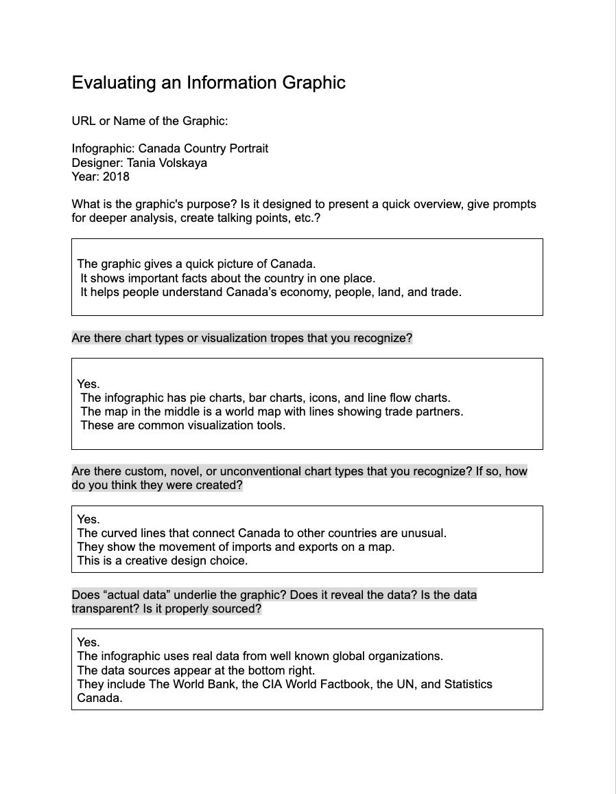

In-class activity
2025
In-class 1: Canada Infographic Analysis
How this activity helped me create my infographic?
Looking at the Canada infographic helped me understand how to organize information in a clear way. I learned how to use simple charts, icons, and colours to guide the viewer’s eye. I also saw how important it is to keep data clean and easy to compare. This made it easier for me to plan my own infographic about Daylight Saving Time. I used the same ideas of grouping topics, keeping the layout simple, and choosing visuals that match the message. It also helped me think about my audience and how to make the information easy to understand.
